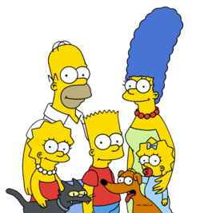
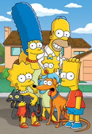
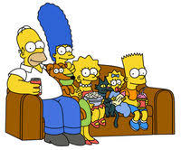

«Сі́мпсони» (англ. «The Simpsons») — американський анімаційний серіал, створений Меттом Ґрейнінґом для компанії Fox. Мультсеріал — сатирична пародія на стиль життя середнього класу США, втілена в сім'ї Сімпсонів, яка складається з Гомера, Мардж, Барта, Ліси та Меґґі. Більшість подій відбуваються у вигаданому містечку Спрингфілді (англ. Springfield). Шоу висміює численні аспекти життя людей, американську культуру, суспільство, навіть американське телебачення.
«Сімпсони» є найдовшим анімаційний серіалом в історії американського телебачення: понад 600 епізодів, які, зі свого боку, об'єднані у 29 сезонів приблизно по 20 серій у кожному. Дебютував 19 квітня 1987 на телеканалі FOX у Шоу Трейсі Ульман. Виробник: продакшн-компанія «Gracie Films». Автор ідеї — Метт Ґрейнінґ.
Ґрюнінґ вигадав «Сімпсонів» незадовго до початку співпраці з Джеймсом Бруксом (англ. James L. Brooks). Він зробив кілька короткометражних сюжетів із життя маргінальної родини, обравши для героїв імена членів власної сім'ї, а своє замінивши на «Барт». Короткометражні фрагменти стали частиною «Шоу Трейсі Ульман», прем'єра відбулася 19 квітня 1987. Після трьох сезонів в ефірі 17 грудня 1989 року програма розвинулася до півгодинного шоу класу «прайм-тайм».
Сімпсони стали одним із перших успішних проектів компанії «Фокс», здобувши кілька видатних нагород. У 1998 році, визначаючи найбільші досягнення 20-го століття в мистецтві та індустрії розваг, часопис «Тайм» назвав «Сімспсонів» найкращим телесеріалом сторіччя. 14 січня 2000 року «Сімпсонів» нагородили зіркою на Алеї Слави в Голлівуді. Це — найтриваліший серед усіх американських комедійних і анімаційних телесеріалів. «Сімпсони» досі мають потужний вплив на сучасну поп-культуру. Цитати з серіалу увійшли до багатьох мов світу. Роздратований вигук Гомера «Дов!» (англ. D'oh!) вже внесено до словника англійської мови. Цитати і теми серіалу вплинули на багато інших анімаційних комедій наприкінці дев'яностих.
У 2007 році — у рік 20-ліття серіалу — на екрани вийшов повнометражний фільм «Сімпсони», касові збори якого по всьому світі склали приблизно 525,3 мільйонів доларів.
У квітні 2018 року з виходом 636-ї серії він став найдовшим серед серіалів за кількістю епізодів, які виходили у прайм-тайм, обігнавши при цьому серіал «Димок зі ствола».
6 лютого 2019 року мультсеріал продовжили до 32 сезону.[1][2]
В Україні наразі (з 2016 року) серіал демонструє канал НЛО TV з українським перекладом. Український дубляж мають усі серії до 29-го сезону включно:
|  |  |  |